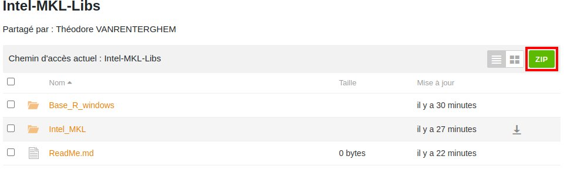
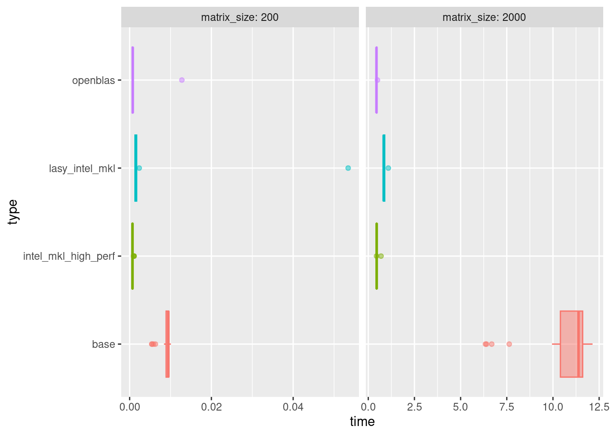
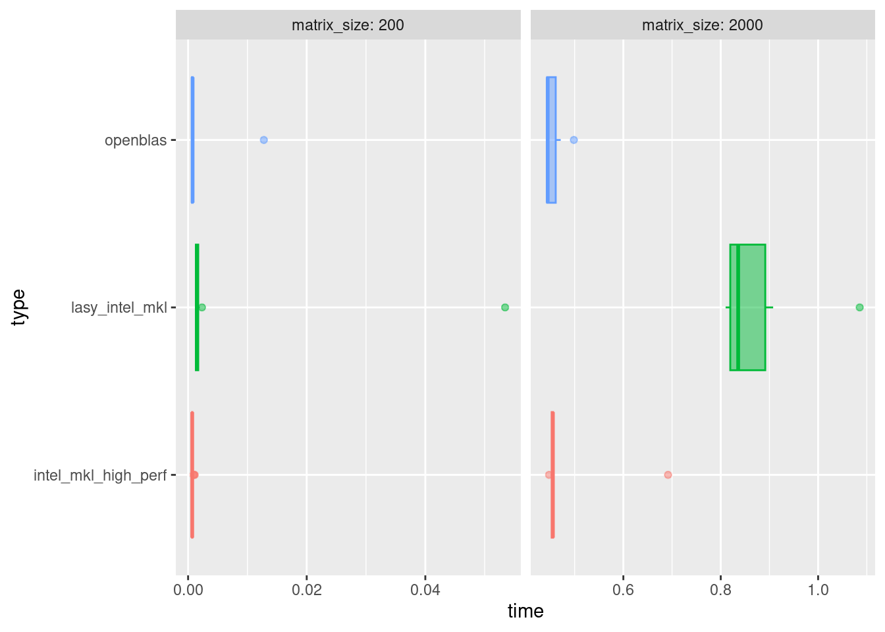

size <- 10000
mat <- matrix(rnorm(size**2), size, size)
tic()
get_res <- mat %*% mat
toc()Intel MKL & Open Blas
Nous allons d’abord installer les librairies Intel MKL (processeur Intel nécessaire) & Open Blas. Ces deux librairies d’algèbre linéaire permettent d’optimiser et/ou de paralléliser un certains nombre d’opérations algébriques, notamment le calcul matriciel.
Nous les testons avec un produit matriciel de 10000 x 10000.
Avant l’installation les librairies utilisées pour du calcul matriciel en R sont libblas.so.3.10.0 et liblapack.so.3.10.0 (on peut les voir avec la ligne suivante)
sessionInfo()Installation sur Windows (seulement Intel MKL)
Le plus simple est de télécharger les librairies Intel - MKL sur le seafile d’Agroparistech.
1 - Faire une copie de la version actuelle de BLAS et LAPACK:
Dans le dossier C:\Program Files\R\Your_R_Version\bin\x64, copier Rblas.dll et Rlapack.dll dans un autre dossier à conserver pour pouvoir revenir aux librairies de la base R.
2 - Télécharger les librairies Intel-MKL
En allant sur https://seafile.agroparistech.fr/d/696def33ceb848508cb0/ et en cliquant sur le boutton vert ZIP en haut à droite, vous pouvez télécharger le dossier. Puis le déziper.

3 - Copier les bibliothèques
Lorsque le dossier est décompressé, allez dans \Intel-MKL-Libs\Intel_MKL et copiez tous les fichiers dans votre C:\Program Files\R\Your_R_Version\bin\x64.
4 - Réouverture de R
Vous pouvez fermer votre session R et la rouvrir. Maintenant votre session R devrait fonctionner avec Intel-MKL. Vérifiez si vous avez gagné en efficacité sur votre ordinateur. Attention, le code déjà parallélisé pourrait être moins efficace car ces bibliothèques parallélisent déjà l’algèbre linéaire.
Concrètement on remplace les deux fichiers faisant appel aux librairies BLAS et LAPACK par des fichiers du même nom mais qui en pratique font implicitement appel à mkl. Pensez bien à sauver une copie des fichiers initiaux.
Pour retourner à la base R il suffit d’opérer à l’opération inverse, copie des fichiers Rblas.dll, Rlapack.dll et libiomp5md.dll du dossier C:\Program Files\R\Your_R_Version\bin\x64. Les mettre en sécurité puis copier les librairies des Rblas.dll et Rlapack.dll depuis votre sauvegarde ou https://seafile.agroparistech.fr/d/696def33ceb848508cb0/.
Installation sur Ubuntu 22.04 (Intel MKL et Open Blas)
Intel MKL
sudo apt install intel-mkl
Open Blas
sudo apt install libopenblas-base
Changement de librairie
Pour changer la librairie Blas
sudo update-alternatives --config libblas.so.3-x86_64-linux-gnu
Pour changer la librairie Lapack
sudo update-alternatives --config liblapack.so.3-x86_64-linux-gnu
Dans les deux cas cela ouvre un menu montrant les différentes librairies disponibles.
Comparaison produit matriciel (BLAS)
Une fois installées, vérifier si les librairies sont bien référencées pour le calcul matriciel avec
sessionInfo()tic()
get_res <- mat %*% mat
toc()| Système d’exploitation | Library | CPU | Base R | Intel MKL |
|---|---|---|---|---|
| Windows 10 | Intel MKL | Intel Xeon - 16 processeur logiques | 15 min | 7 secondes |
| Ubuntu 22.04 | Intel MKL | Intel i7 - 8 processeur logiques | 5 min | Moins de 1 min |
| Ubuntu 22.04 | Open Blas | Intel i7 - 8 processeur logiques | 5 min | 9-14 secondes |
Benchmark approfondi
Nous allons comparer les performances de toutes ces librairies sur Ubuntu avec un ordinateur à 8 cœurs Intel I7. Pour effectuer ce benchmark nous devons réitérer les fermetures de sessions donc le même code à été lancé séquentiellement.
Set-up
Packages
library(ggplot2)
library(purrr)
library(dplyr)
library(furrr)
library(future)
library(tictoc)Fonctions de test
test_type <- function(seed, type = 'type'){
res <- data.frame(seed = rep(0,2),
time = rep(0,2),
type = rep(0,2),
matrix_size = rep(0,2))
matrix_size <- c(200, 2000)
for(j in 1:2){
set.seed(seed)
mat = matrix(rnorm(matrix_size[[j]] ^ 2), ncol = matrix_size[[j]])
T1 = Sys.time()
res_tmp = mat %*% mat
T2 = Sys.time()
res$seed[[j]] <- seed
res$time[[j]] <- difftime(T2, T1)
res$type[[j]] <- type
res$matrix_size[[j]] <- matrix_size[[j]]
}
return(res)
}
compare <- function(seeds,type = 'type'){
if(type == "base"){
plan(multisession, workers = availableCores())
future_map_dfr(seeds,~test_type(.x,type = type))
}else{
map_dfr(seeds,~test_type(.x,type = type))
}
}
my_multiplot <- function(data){
ggplot(data = data,
aes(x = time, y = type, fill = type,col = type)) +
geom_boxplot(alpha = 0.5,show.legend = F) +
facet_wrap("matrix_size",scales = "free_x",labeller = label_both)
}Paramètres
types <- c("base","openblas","lasy_intel_mkl","intel_mkl_high_perf")
seeds <- 1:20Sélection de la librarie active
type <- types[[1]]Calculs et sauvegarde
res <- compare(seeds,type)
saveRDS(res, file = paste0('res_algebrica_calculations/res_',type,'.RDS'))Chargement des résultats
list_of_results <- grep("^res_algebrica_calculations/res_.*.RDS$",
dir(recursive = T),
value=T)
res_table <- map_dfr(list_of_results,readRDS)Graph des résultats complets
On peut voir dans ces graphiques que dans l’ensemble OpenBlas et Intel-MKL sont plus efficaces que la base de R. Cependant d’autres remarques sont à faire :
- OpenBlas est utilise constamment l’ensemble des cœurs disponibles, ce comportement extrême peu devenir un problème lors des longs calculs où lorsque l’on utilise des librairies plus complexes comme par exemple
Rcppavec laquelle il obtiens des performances largement plus faible que la base. - Nous avons aussi remarqué une certaine variations dans les performances de Intel-MKL sur Ubuntu seulement. Bien que toujours observée plus efficace que la base. Il est fréquent que pour un même calcul le temps soit jusqu’à 4 fois plus long que le minimum. Cette variation semble être fixe pour chaque session R ouverte. Dans ces graph nous appelons “lasy intel mkl” les sessions de faible performances.
my_multiplot(res_table)
Sans la base R
res_table %>%
filter(type != "base") %>%
my_multiplot()